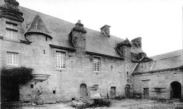
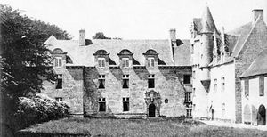
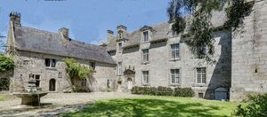
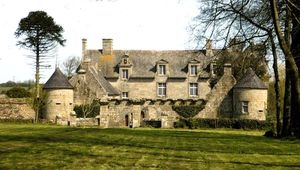
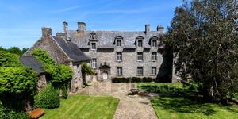
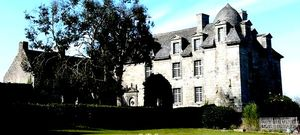
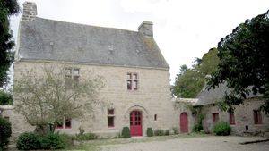

Recensement Jean-Claude Truffet







| Département | 29 — Finistère |
| Canton | Plabennec |
| Commune | Lannilis |
| Type d'édifice | Château |
| Période d'origine | XIV-XVII |
| Coordonnées GPS | 48° 34' Nord, 4° 31' Ouest |
Trois châteaux à Lannilis ; Kerouartz et Bergot, Kerbabu KEROUARTZ La famille de Keroüartz, entrera dans lhistoire à l'époque où légende et merveilleux se confondent en cette journée du 26 mars 1351. De cette héroïque épopée du Combat des Trente, un champion Hennequin Hérouart fera partie du team des chevaliers, aux règles établies par le code de lhonneur. Elle franchira la porte de la renommée en 1376, un autre tournoi donnera loccasion à Hervé de Keroüartz de mener son blason au Panthéon des "cycles Arthurien". Ce fait darme, authentifié et conté par Guillaume de La Penne "Gestes des Bretons en Italie, sous le pape Grégoire XI" sera porté aux "Preuves de lHistoire de Bretagne" Les clameurs de la révolution écarteront la famille de son sol natal, mais au XIXe siècle, le destin de lhistoire donnera loccasion au marquis de reconquérir ses biens, pouvait-il ignorer la maxime gravée en 1771 dans le plomb du cadrant solaire du parc, "Afflictis lentas, celeres gaudentibus horae" (le temps passe lentement dans la peine, rapidement dans la joie). Et cette autre devise nobiliaire des Keroüartz " Tout avec le temps" nest-elle pas dactualité depuis demeuré dans la même famille. appartient au marquis de Kérouartz. KERBABU dit des abers, une première alliance Perrien en 1646.
Le décès à Kerbabu en 1759 du vieux comte Claude-Hubert, dernier seigneur le capitaine des Garde-côtes, trois fois veuf, et dont la nombreuse progéniture est depuis longtemps éparpillée, ayant récupéré par retrait lignager (Perrien-Lannion) le marquisat de Crenan en Quintin.Le décès à Quintin en 1836 du dernier Bellingant, marquis de Crenan, ruiné, dont les prodigalités auront mené sa fille à réaliser tout l'héritage.
KEROUARTZ, l'édifice, construit à la fin du XVIe siècle et au début du XVIIe siècle, est précédé au sud par une allée d'un kilomètre de long, bordée de part et d'autre d'une double rangée de hêtres. A l'extrémité sud de cette allée le portail d'entrée, dont il ne restent que deux piles rectangulaires en granit surmontées chacune d'un pignon triangulaire. La pile Est est ornée, à son sommet, sur sa face extérieure, des armoiries de la famille de Kerouartz. Ces deux piles comportent sur leur face interne des saillies verticales de taille permettant la pose de portes sur pivots. A l'est de cet ensemble existe un passage à enjamber, constitué de deux marches surmontées d'une dalle de pierre verticale. L'intérêt de cet ensemble est constitué par sa position à l'entrée de l'avenue qui mène au château et forme, avec ce dernier et le parc, un tout indivisible. Inscription par arrêté du 18 octobre 1926. BERGOT typique de larchitecture des manoirs du Léon aux XVe et XVIe siècles, Maner Bras Ar Bergot a conservé sa façade en grand appareil, avec ses ouvertures dissymétriques et sa porte à accolade blasonnée. Lintérieur comporte de beaux encadrements de pierre et deux grandes cheminées, dont celle imposante du rez-de-chaussée. Un grand escalier rampe sur rampe occupe la tour située au nord du manoir. Le Bergot, ou Bergoët a donné son nom à une très ancienne famille du Léon. Les parties les plus anciennes du manoir datent des Bergoët de 1413 à 1534. Dès 1543 et jusquen 1636, le Sieur du Bergot est un cadet de Kerouartz : Ollivier, Judicaël et François. En 1674, le manoir est aux Michel de Kervenny, alliés aux Kerouartz par Marie de Kerouartz. En 1744, Charles Raymond de Clérambault, commissaire général à la marine au Port Louis, est sieur du Bergot. Ses fils ayant émigré, le manoir est confisqué au profit de la nation le 20 thermidor an IV. Les Clérambault le rachète. Un partage de 1886 démembre le domaine.
Famille d'Hervé de Keroüartz Kerbabu; comte Claude-Hubert,
"
Trois châteaux à Lannilis ; Kerouartz grav-3-4-5-6 et Bergot grav 7, Kerbabu grav 1-2. Bergot GPS : 48° 34' Nord, 4° 31' Ouest